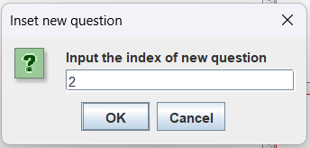

《出題趣！》是《刷題趣！》專用的出題工具，讓你能自己設計題目。透過《出題趣！》，你可以建立一個屬於你自己的題庫。每個題庫包含數道題目；每道題目包含了問題敘述、四個選項和一個正解。
寫好題庫後，你可以下載到你的電腦，之後便能在單人模式中選擇該題庫練習，和分享給你的同學；亦可上傳題庫到伺服器，在多人模式遊玩這個題庫。
《出題趣！》的介面如下，這個頁面將指導你如何使用《出題趣！》。
左側的文字框可以輸入問題敘述。右側的4個文字框分別是選項A、B、C、D，其中以紅色框起來的是正解選項。透過點選選項右側的圓形按鈕，你可以選擇正解是哪個選項。
透過導覽列你可以導覽到其他題目並進行編輯，只要點擊你想要導覽的題號即可。例如Q2按鈕會導覽至第二題，讓你可以編輯第二題的題目。正在編輯的題目題號會以紅色框框顯示。
在最下方有一排按鈕，分別是
命名題庫
新增一道新題目放在題庫的最後面，並導覽至該題目進行編輯
在題庫中間插入一道新的第X題題目，並導覽至該題目進行編輯。按下Insert鈕會跳出一個視窗讓你選擇要插入至第幾題。以下圖為例會插入一個新題目作為第二題

刪除正在編輯的題目
儲存題庫
開啟其他題庫
上傳題庫到指定的伺服器。所有的題目必須完整填寫才能上傳，包含題目敘述和四個選項不能留空白